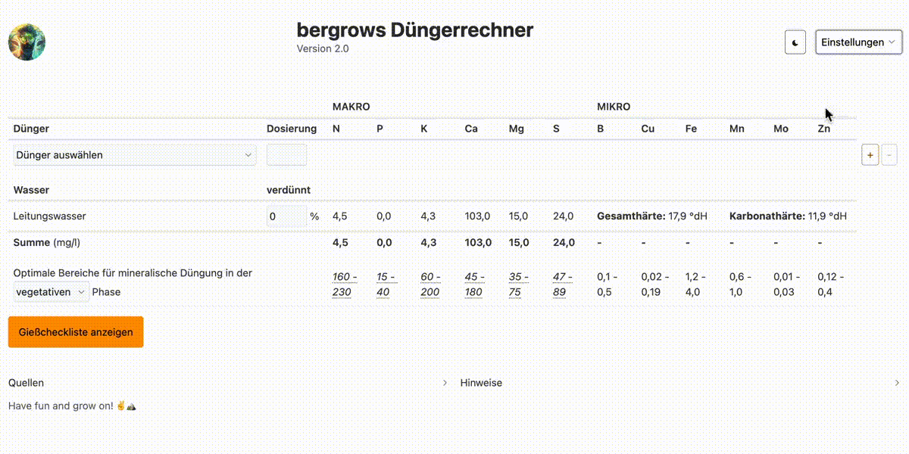
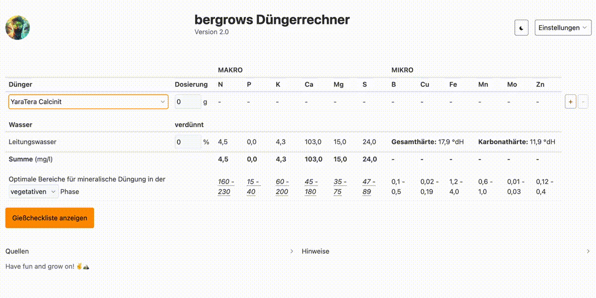
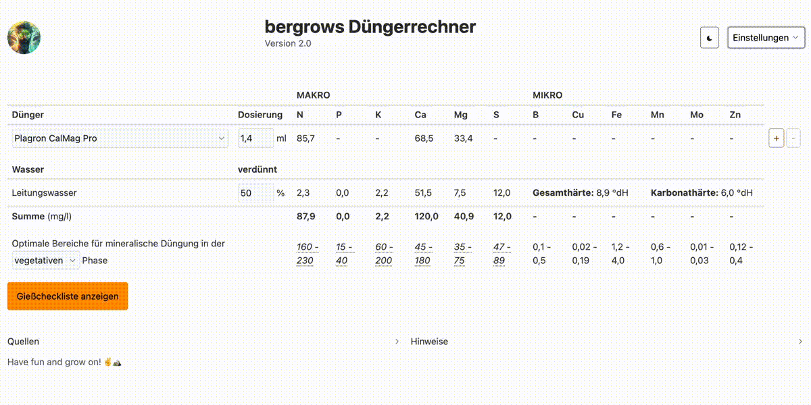

Handbuch - bergrows Düngerrechner
inkl. Videoanleitung
1. Wasserwerte eingeben
In dieser Maske können die Wasserwerte des verwendeten Gießwassers eingegeben werden. Diese werden in die Mengenberechnung der Nährlösung mit einbezogen. Die Eingabe erfolgt in den üblichen Angaben, wie sie in Wasseranalysen von Versorgern zu finden sind, und können sowohl in mg als auch in mmol angegeben werden. Die Umrechnung in die elemnetare Form (also bspw. Sulfat zu Schwefel) für die Berechnung der Nährlösung erfolgt automatisch.

2. Dünger anlegen
Neben den über 100 Düngern in der Datenbank können auch beliebig viele eigenen Dünger angelegt werden. Hierzu wird der Menüpunkt „Neuer Dünger“ aufgerufen. Die Eingabe der Werte erfolgt in Prozentwerten ihrer Oxid-Form, wie sie typischerweise auf Düngern angegeben sind. Die Umrechnung in die elementare Form erfolgt automatisch. Zudem kann für Flüssigdünger die relative Dichte angegeben werden, so dass eine korrekte Umrechnung der Stoffmengen erfolgen kann. Für Feststoffdünger beträgt diese immer 1. Nicht angegebene Werte werden mit 0 gespeichert. Nach Eingabe wird der Dünger am Ende der Düngerliste angezeigt.
3. Nährlösung berechnen
Das Herzstück des Düngerrechners ist die Berechnung der fertigen Nährlösung aus den Dünger- und Wasserwerten. Hierzu fügt man beliebig viele vorhandene oder eigene Dünger in der gewünschten Menge pro Liter der Liste hinzu. Zusammen mit den Wasserwerten ergibt sich so das vollständige Nährstoffprofil der Nährlösung. Darüber hinaus gibt es die Möglichkeit, eine Verdünnung des Gießwassers mit entsalztem / RO-Wasser einzugeben. Eine Verdünnung von 25 % bedeutet hier, dass zu 3 Teilen Gießwasser 1 Teil entslaztes Wasser hinzugegeben wird. Die Konzentrationen der einzelnen gelösten Stoffe sinkt also um 25 %. Eine Eingabe von 50 % würde eine 1 zu 1 Mischung bedeuten.
Im gezeigten Beispiel werden 1,4 ml eines CalMag-Präparats hinzugefügt, sowie das Wasser mit den zuvor angegebenen Werten 1 zu 1, also um 50% verdünnt. Im Beispiel werden so ein Calcium-Gehalt von 120 und ein Magnesium-Gehalt von 40 erreicht, ideale Werte für die Blüte.
Die darunter angebenenen optimalen Wertebereiche für die einzelnen Nährstoffe basieren auf aktueller wissenschaftlicher Literatur (aufgelistet unter „Quellen“ im Rechner), und werden bei neuen Erkenntnissen angepasst.
4. Gießcheckliste
Mit Gießcheckliste können die Aufwandmengen der einzelnen Produkte für die gewünschte Gießmenge berechnet werden. Die Komponenten der Nährösung werden entweder in Reinform oder als Stammlösung in gängigen Konzentrationen angegeben, wie sie etwa bei Nährsalzen typisch sind. Die Haken helfen dabei, den Überblick über bereits hinzugefügte Dünger zu behalten, damit kein Produkt aus Versehen doppelt hinzugefügt oder vergessen wird.
